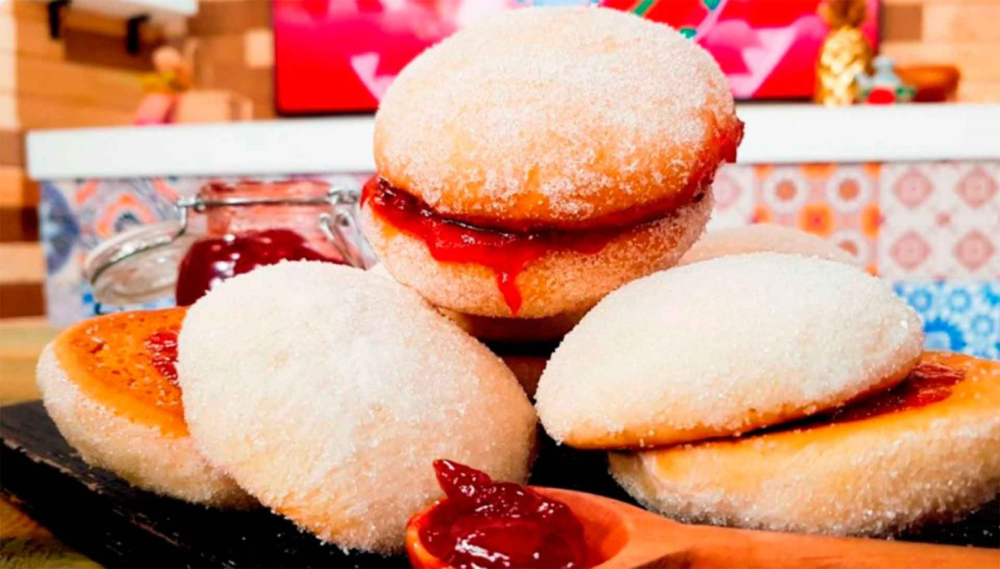

Visión
“Servir a nuestros clientes, deliciosos y auténticos alimentos elaborados con ingredientes locales y sostenibles de alta calidad, al tiempo que crece un negocio saludable basado en valores, haciendo hincapié en la innovación de productos deliciosos y de calidad que satisfagan las necesidades de nuestros clientes a precios razonables.”
Misión
“Ser la mejor empresa mediana especializada en la fabricación de productos de panadería semiindustriales caseros siempre apuntando el bienestar de los colaboradores, así como de los consumidores de nuestros productos con un ambiente de trabajo único y acogedor"
$ 2.50
Bolillo
Es un pan hecho con harina de trigo, de origen colonial.
$ 4.00
Concha
Unos de los panes mexicanos más populares es la concha, que le dieron este nombre porque se parece a las conchas de mar.
$ 4.00
Ladrillos
Se llama así por su forma rectangular, como los ladrillos que se utilizan para la construcción. Se hace de pura «pedacería» de otros panes y se les agrega miel de piloncillo; arriba lleva una capa de chocolate.
$ 3.00
Cocol
Se trata de otro de los panes mexicanos más populares, tiene forma de rombo y generalmente está cubierto de ajonjolí. Está hecho de harina de trigo con piloncillo y un toque de anís, algunos le ponen trocitos de nuez.

$ 4.00
Ojo de buey
Tiene este nombre por su forma y visto desde arriba parece un ojo de buey. Es hojaldrado alrededor y al centro esponjoso tipo panqué.

$ 5.00
Pan de muerto
Sin duda uno de los panes mexicanos más conocidos a nivel mundial es el pan de muerto. Este pan se remonta a la época prehispánica donde era un simbolismo de la muerte como ofrenda.
$ 5.00
Chilindrina
Es muy parecida a la concha, hecha con harina de trigo y arriba lleva trozos de azúcar mojada.

$ 4.00
Beso
Son dos panes tipo mantecada, que llevan mantequilla y son espolvoreados con azúcar, y entre éstos hay mermelada de fresa que sobre sale entre los dos panes, dicen que simula la lengua.

$ 5.00
Pan de pulque
Seguro has visto y probado este pan, es el protagonista en las ferias o mercados de pueblo. Hecho con el trigo español y el pulque mexicano, es grande y lleva ajojolí arriba.
$ 3.00
Puerquitos
Se elabora con harina de trigo y su nombre se debe a la forma de este pan. Los hacen en dos versiones blandos o crujientes, aroma tostado y sabor a canela y piloncillo.